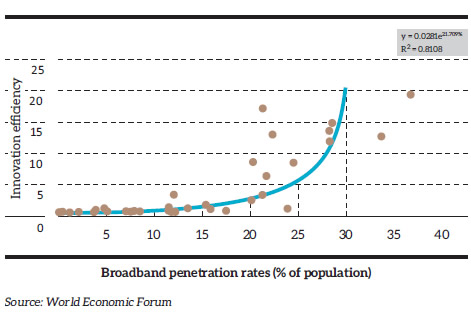
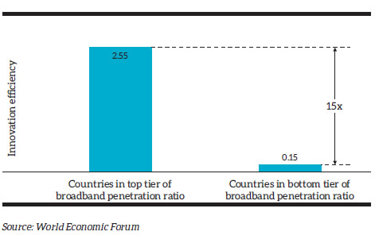
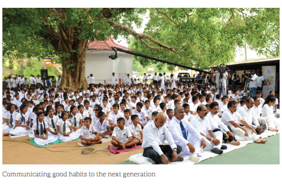
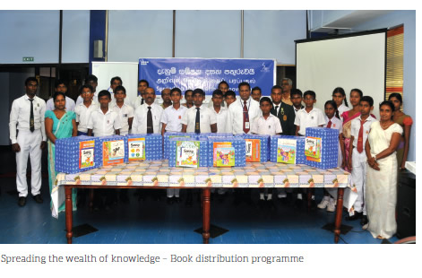
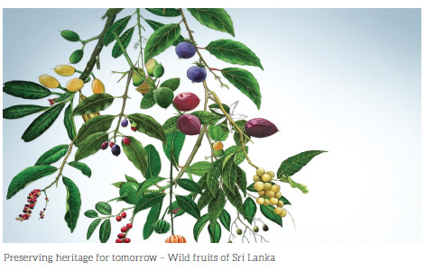

Our approach to corporate responsibility is based on a symbiotic relationship in which we derive financial value from our business operations while in turn we deliver sustainable benefits to our local communities and proactively manage our environmental footprint.
We are unleashing the power of broadband by connecting people, businesses and even machines. It’s about the digital revolution that is transforming the way people communicate, access information, transact business and even choose their entertainment, which in turn contribute towards economic development.
Mobile devices, now relatively inexpensive, have enormously expanded the potential and practicability of personalised learning. They can be used for literacy training, numeracy training, interactive tutoring as well as to access e-books or e-readers, educational games and so on, thereby unlocking that important ingredient among young students – their curiosity. Learning can happen at times and in places previously non-conducive to formal education, and at one’s own pace.
The Internet of Things has the potential to revolutionise healthcare. This includes developments in –
Access to banking facilities lag behind mobile phone penetration in emerging market economies and developing countries. But the gap is narrowing as financial institutions begin to see the benefits of Internet and mobile banking that do not require investments in brick and mortar branches and staff, and the opportunity to enter markets that were hitherto too remote or lacked a critical mass. Nevertheless, it will also require a new mindset to serve marginalised groups such as rural women and micro enterprises.
ICT and broadband stoke innovation and entrepreneurship, and they do so exponentially. Countries with higher broadband penetration also see greater innovation. Broadband penetration in Sri Lanka stood at 19.6% of the population by end 2015, up from 2.4% in 2010.
Source: TRCSL, CBSL Annual Report 2014


Ours is an integrated broadband strategy comprising both fixed and mobile-ICT solutions that paves the way for a broadband-enabled nation. Research has provided conclusive evidence of a positive correlation between GDP growth and fixed telephony penetration, an even greater impact with mobile telephony penetration, while greatest impact comes with broadband penetration.
Our strategies to bridge the digital divide focus on four areas, namely, affordability, availability, affinity and applicability. On the supply side, we provide affordable access to fixed and mobile infrastructure. On the demand side, we are working on customer-focused local content that enhances affinity and applicability.
The provision of local content is one of the biggest challenges in the Sri Lankan context. Most of the services offered by Government ministries, departments and state-owned enterprises are not available on the web. Although we are ahead of other nations in the region in terms of affordability and technology, other aspects need to fit in. There is a limit to what operators can do to drive content. It needs support also from the corporate and Government sector. Some of the steps we have taken in supporting local content development include the following:
In terms of infrastructure, we provide multiple broadband connectivity options including fixed wired, fibre to the home or business premises, fixed wireless and mobile over the entire country.
The shared hosting service offered by SLT is the most economical solution since the services are provided in a shared server environment. Multiple web sites hosted on a single physical web server with each site residing within its own partition on the server and separated from other sites in a secure way. Similarly, we offer shared email hosting and database hosting services to add value to our customers.
The hosting of local content locally provides for a faster Internet experience as the Internet traffic is domestic via the SLT Internet Exchange (SLT IX). Without this, Internet users need to access content through international traffic while meeting global Internet bandwidth limitations, which results in slower speeds as well as higher costs. In some ways, it could be compared to forcing all domestic airline flights to have a stopover in a distant, foreign country!
The main supply side challenge comes from extending present day networks outside urban areas into remote or sparsely populated areas, and upgrading networks to cope with the growth in traffic. Where the business case is compelling, the private sector can take the lead in providing Internet infrastructure and services, but public investment or intervention is sometimes justified where the private sector is unable to provide affordable access.
Our contribution towards improving availability and affordability of Broadband in Sri Lanka include the following:
As discussed in the previous and following sections of this Annual Report, our activities arising from our business mandate have contributed directly and indirectly towards the wellbeing of stakeholders and the development of the country at large. Our services have touched the lives of individuals, institutions and enterprises of all sizes – employees, customers, business partners or even competing operators. Our telecom business provides direct employment to over 9,000 people and we support their professional development through training and career advancement. We partner with the Government in its vision to create a technology-empowered nation.
Going beyond our business boundary, we engage with local communities in many ways through community development projects, volunteerism and financial support for charitable causes.
We supported and participated in several religious events celebrated by Buddhists, Hindus, Muslims and Christians across the country. Many of these are annual events.
In collaboration with Asia Foundation we distributed a total of 110,000 books to school libraries.
The SLT calendars and complimentary items produced for the year 2015 carried the theme ‘Corals of Sri Lanka’. We also supported the planting of medicinal plants in Anuradhapura, Tantirimale and Monaragala.
Theme of calendar and complimentary items for the year 2016 was also produced under the theme of “Wild Fruits of Sri Lanka”
SLT provided financial assistance towards building a rehabilitation centre at the Methsewa Foundation in Wellawaya for differently-abled children.
Supporting the national broadband strategy, SLT partnered
with the Ministry of Education and the TRCSL to empower
the SchoolNet programme by providing next generation
network (NGN) broadband Internet access for selected
schools in the country.
Phase I of SchoolNet connected 1,500 schools and their ICT
labs. Another 1,500 schools will be connected under the
phase II of the project.
As part of the Secondary Education Modernisation Project
under the Ministry of Education, the initiative is set to
revolutionise the way school administrators operate, the
way teachers teach, the way parents are involved as well as
the way in which children learn. SchoolNet allows teachers
and students from schools throughout the nation to access
reference material, tutorials, emails and other educational
programmes over the Internet. In addition, for the first time
teachers will be able to access several lesson plans on their
computers. The SchoolNet system which is connected via
VPN technology is also supported with multiple broadband
technologies like ADSL and 4G/LTE establishing main
links at 200 Mbps speeds within the network and also
providing 100 Mbps Internet bandwidth to connect to the
global Internet.
SLT sponsored several events during the year in the areas of empowering sports, arts and culture, education and ICT.
We sponsored and/or participated in several professional events such as National Human Resource Conference, Annual Conference of the Chartered Institute of Marketing, Business Leaders’ Summit of the Chartered Institute of Management Accountants, Techno 2015 Exhibition of the Institution of Engineers Sri Lanka and many more.
A wide range of projects and activities were undertaken during the year, which include the following:
Our internal work processes as well as our products and services are all geared towards resource efficiency and the mitigation of negative environmental consequences. Listed below are some examples;
In addition to marketing products and services that support good environmental management, we believe in leading by example in our own operations. We continued to implement several initiatives on energy management that support our twin goals of cutting down waste (and hence costs) while reducing our own carbon footprint.
During the year we established an Energy Policy for SLT. The key aspects of the Policy were communicated to all employees while we also conducted awareness sessions on energy management and ISO 50001. Relevant employees were also trained on operation and maintenance and the use of tools and test equipment.
The several projects were executed on fuel switching and energy efficiency during the year, and they are summarised below:
Our efforts have borne good results. We see a steady decline in the consumption of purchased electricity as well as our use of fossil fuel in relation to activity level. These measures have not only positively impacted on our greenhouse gas (GHG) emissions but have also resulted in cost savings.
SLT is in the process of migrating from our legacy network to the next generation network which will be completed during 2016. Over the last few years, this migration has resulted in reduced electricity and fuel consumptions and also minimised our environmental impact by lowering GHG emissions.
A well-known private hospital in Colombo partnered with SLT for a comprehensive ICT solution. The ICT solution comprises a next generation network (NGN) ultrafast fibre optic data network which is also capable of carrying IP-based high definition voice, a state-of-the-art multimedia call centre, high speed enterprise Wi-Fi including free Wi-Fi and feature-rich PEO TV facilities for each room and visitor lobby areas of the hospital. It also comprises high speed data connectivity between the hospital’s network of 44 laboratories located across the country via virtual private network (VPN) technology.
The Marketing Communications Manager of the hospital commented, “Broadband and ICTs are having a real impact on the delivery of healthcare services in a developing country like ours, leading to improved response times in emergency situations, reduced isolation, and better training and equipment for healthcare workers. Newly-introduced solutions such as free Wi-Fi are a growing need amongst patients and guests visiting the hospital. We have opted for fibre optic connectivity which paves the way to a total paperless hospital environment in the near future with the possibility of patients being able to access records online. The 12-agent multi-media call centre will handle inbound general inquiries and consultation appointments while also managing outbound calls to specialists, marketing campaigns, and patient follow-up programmes. Custom designed for our hospital, the multi-media call centre also offers SMS and email notification facilities for patients and consultants”.